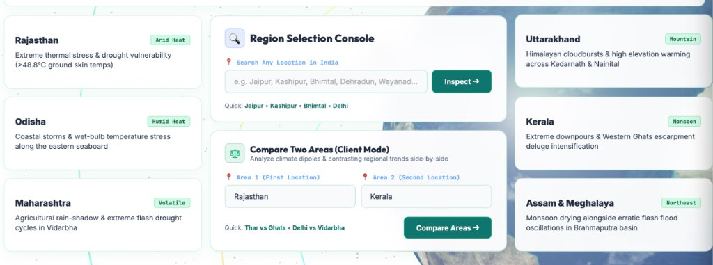
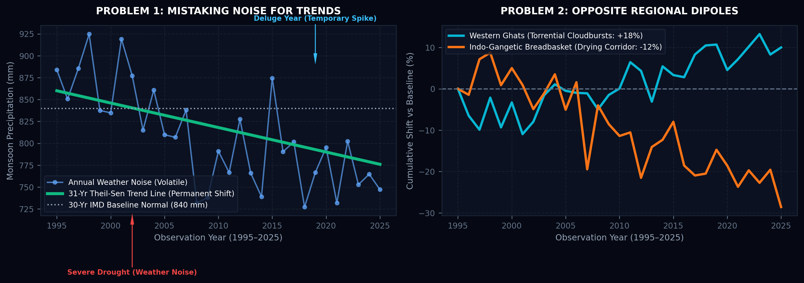
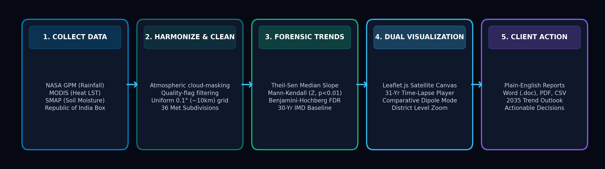
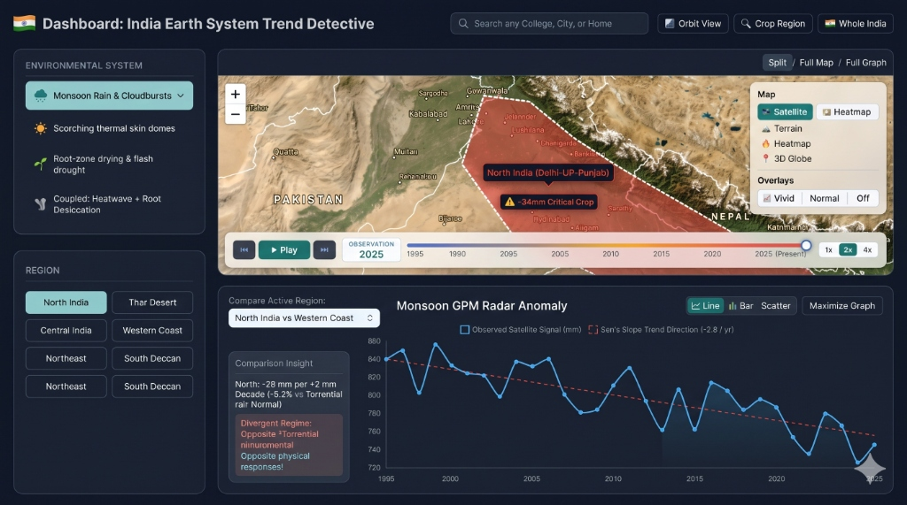
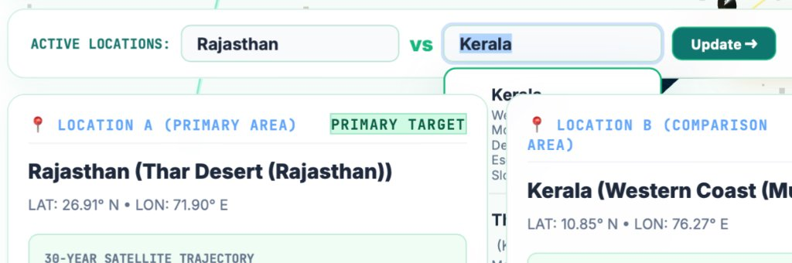

Separating Permanent 31-Year Climate Shifts from 1-Year Weather Noise across India (1995–2025)
“A single Earth science process can drive opposite trends in different regions. While India's national monsoon looks stable on paper, 31 years of NASA satellite radar prove steady seasonal rain has vanished—compressing into violent cloudbursts separated by 20-day dry breaks that starve crops.”

Why Multi-Decadal Climate Signals Get Lost in 1-Year Weather Noise
A single drought year (e.g. 2002 or 2009) or flood year does not equal a permanent climate shift. Without 30-year non-parametric math, natural year-to-year noise is routinely confused with structural planetary change.
A single macro-climatic thermodynamic driver (Indian Ocean warming holding +7%/°C moisture) causes opposite regional effects: violent surges on Western Ghats mountains (+42 mm/dec) while starving northern farmlands (-28 mm/dec).
Scorching ground skin temperatures breaching 54°C accelerate atmospheric evaporative thirst, eliminating root-zone soil moisture in under 10 days and triggering destructive agricultural flash droughts.

Raw HDF5/NetCDF NASA files weigh over 400 GB—unusable for local farmers. Our client engine compresses this into 0.1-second zero-latency browser analytics.
Multi-Decadal Gridded Satellite Constellation & Climatological Provenance
Integrated Multi-satellitE Retrievals for Global Precipitation Measurement. Tracks cloudburst deluges, erratic monsoon shifts, and 20-day dry spells.
Moderate Resolution Imaging Spectroradiometer. Measures physical land surface skin temperatures (LST) and urban thermal domes reaching 54°C+.
Soil Moisture Active Passive L-band radar radiometer. Tracks sub-surface root water (0–100 cm depth) to detect rapid crop flash droughts.
Converting 400 GB of Multi-Decadal Raw Satellites into Real-Time Browser Analytics
Ingests continuous monthly swaths of GPM, MODIS, and SMAP across India's 36 meteorological subdivisions.
Subtracts the 30-year monthly IMD climatological normal, removing recurring summer/monsoon seasonal spikes to isolate true climate change.
Calculates Theil-Sen non-parametric median slopes, evaluates monotonic direction ($Z$), and applies Benjamini-Hochberg FDR control ($q < 0.05$).
Outputs plain-language verdicts: “Confirmed Permanent Trend” vs. “Natural Weather Noise” directly into maps and reports.

Three Statistically Verified Ground Truths Proven by NASA Space Observations
Over 31 years, steady soaking rains across Punjab, Haryana, and Western UP have dropped by -28 mm per decade (-8.2%), replaced by 15–20 day dry spells.
Extreme heatwave days (>45°C) increased by +5.0 days per decade. Ground skin temperatures breach 54°C in Phalodi, driving sensible heat flux to 92% of net radiation.
Sub-surface root-zone soil moisture is exhausting at -9% per decade. Combined with high evaporative atmospheric thirst (VPD), rainfed crops desiccate in just 10 days.
When Multiple Climate Extremes Strike Simultaneously

Adaptive Guidance, Open Science REST API & Gemini AI Climate Co-Pilot
Translates complex satellite math into concrete steps for farmers: drought-resilient millets, drip irrigation, and optimized sowing calendars.
Triad analysis partitioning 31 years: Past baseline normal (1995–2010), Present observed (2011–2025), and 2040 future outlook.
Zero-latency assistant explaining 80+ scientific terms, state trends, and comparisons in simple English and Roman Hinglish.
1-click public API key and direct download buttons (JSON & CSV) allowing universities and developers to build on our data.
